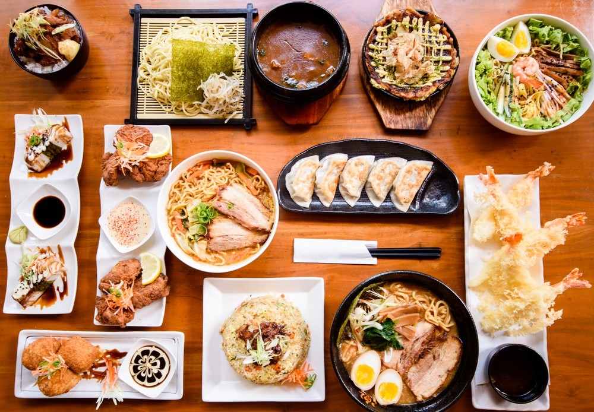

Kimono mungkin salah satu item yang paling dikenal dari pakaian di Jepang dan dikenal dengan detail dan desain yang indah. Kimono pada dasarnya adalah sebuah jubah panjang yang dilengkapi dengan sabuk di pinggang disebut Obi. Kimono dikenakan di seluruh Jepang, meskipun sekarang orang hanya biasanya memakaoinya untuk menghadiri upacara atau festival, dan biasanya dipakai di pesta pernikahan sebagai bagian dari perayaan. Hal ini dapat memakan waktu beberapa jam untuk mengenakan Kimono dan kamu akan membutuhkan seseorang untuk membantu kamu, tetapi jika kamu mendapatkan kesempatan untuk mencoba satu di, ini adalah pengalaman yang tidak boleh dilewatkan.
Banyak makanan di Jepang disiapkan sesuai dengan tradisi kuliner yang tidak berubah selama berabad-abad. Makanan Jepang yang dikenal sebagai beberapa yang terbaik di dunia, dan kamu akan dimanjakan untuk pilihan jika kamu dalam perjalanan datang ke sini.
Tentu saja salah satu jenis yang paling terkenal dari makanan di sini adalah sushi, yaitu nasi yang biasanya diatasnya diberi ikan atau makanan laut. Karena Jepang merupakan negara kepulauan, makanan laut merupakan bahan makanan penting dan selalu dalam keadaan segar. Makanan Jepang sering sangat sederhana namun lezat.
Makanan favorit lainnya adalah sashimi - irisan ikan mentah atau daging kuda, yakitori, satenya Jepang yang dipanggang di atas arang, varian mie yang disantap panas maupun dingin, tempura – gorengan sayuran dan ikan yang dibalut tepung, teppanyaki – sayuran dan daging yang dimasak di wajan datar panas..dan masih banyak lagi.
Setiap tahun Jepang orang merayakan awal musim semi dengan perjalanan untuk melihat pohon ceri karena sedang mekar dan penuh warna. Bunga pink adalah pemandangan yang indah, dan itu ada kebiasaan untuk pergi piknik dan menikmati suasana di antara bunga sakura.
Hanami, atau menikmati pemandangan bunga sakura, biasanya diadakan di seluruh Jepang, mulai dari bagian selatan Jepang: Okinawa yang dimulai mekar pada akhir Februari atau awal Maret, bertahap ke utara. Tokyo biasanya mekar pada akhir Maret, sementara Kastil Hirosaki di Aomori yang terkenal dengan keindahan sakura, baru mulai mekar pada awal Mei.
Di Jepang, taman bukan hanya taman, dan hortikultura di negara ini memiliki sejarah panjang dan terkenal. Di masa lalu, kebun dirancang sesuai dengan filosofi Buddha dan masih banyak mengandung unsur Buddha seperti candi atau kuil.
Taman Jepang dirancang dengan harmoni dalam pikiran, sehingga setiap elemennya dipilih dengan hati-hati untuk mengimbangi yang lain. Inilah sebabnya mengapa kamu dapat berharap bahwa taman Jepang mengandung berbagai fitur, seperti tanaman, air, batu, dan jembatan kayu, semuanya merupakan paduan dari gaya dan idealis alam.